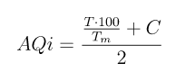
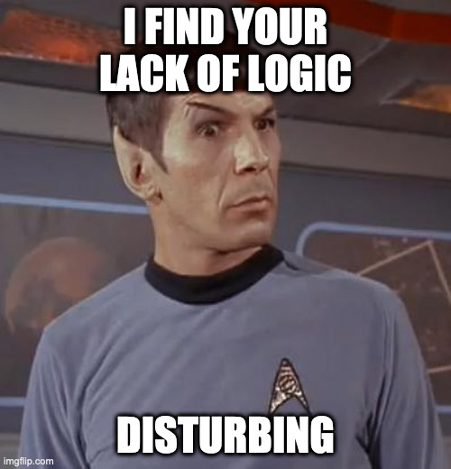
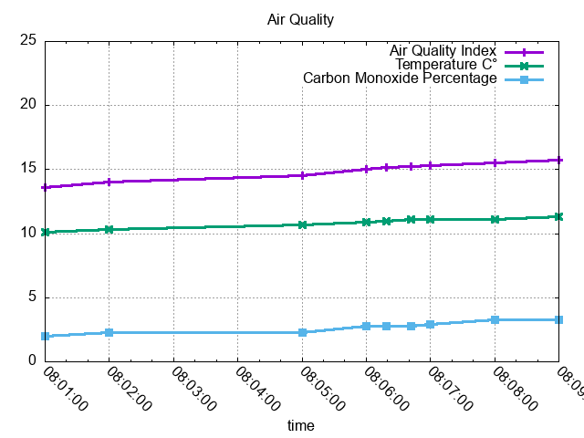
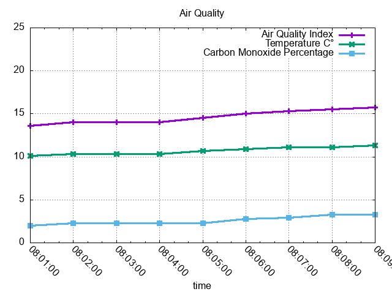
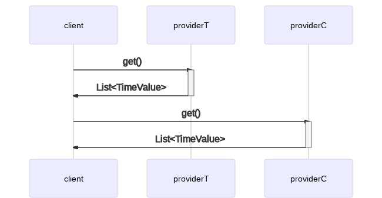
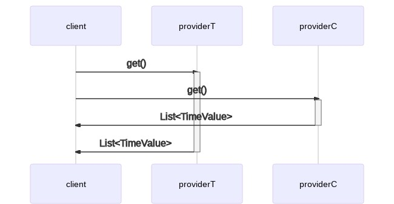

Full code for all the examples can be found here.
How to run the program
mvn clean compile verify exec:java
Preface
Suppose we want to calculate an air quality index based on two values:
- air temperature
- percentage of carbon monoxide in the air
Given the following symbols:
| symbol | meaning |
|---|---|
AQi | air quality index |
T | air temperature in Celsius degrees |
Tm | maximum air temperature in C° |
C | percentage of carbon monoxide in the air |
We may calculate the AQi with the following sorry excuse of a formula:

DISCLAIMER: please note that this formula is in no way scientific, and it's intended for educational purposes only. I don't want environmentalists and real scientists chasing me around with math formulas and accusations of quackery. Also, I saw a chance for a pretty LaTeX equation and I took it, because aesthetics... and it makes me look smart, which I certainly am not1.
What the formula attempts to say is that as the temperature and the carbon monoxide percentage rise, the air quality decreases. Yeah, this is totally unscientific but bear with me for the sake of argumentation, please.
I assume a maximum temperature of 40C°. So, for instance:
$ bc -l
bc 1.06
Copyright 1991-1994, 1997, 1998, 2000 Free Software Foundation, Inc.
This is free software with ABSOLUTELY NO WARRANTY.
For details type 'warranty'.
t=60; c=100; tm=40; (((t * 100) / tm) + c) / 2
125.00000000000000000000
t=60; c=50; tm=40; (((t * 100) / tm) + c) / 2
100.00000000000000000000
t=40; c=50; tm=40; (((t * 100) / tm) + c) / 2
75.00000000000000000000
t=40; c=10; tm=40; (((t * 100) / tm) + c) / 2
55.00000000000000000000
t=20; c=10; tm=40; (((t * 100) / tm) + c) / 2
30.00000000000000000000
t=10; c=5; tm=40; (((t * 100) / tm) + c) / 2
15.00000000000000000000
t=10; c=0.5; tm=40; (((t * 100) / tm) + c) / 2
12.75000000000000000000
From this we can derive the following totally unscientific table:
| AQi | meaning |
|---|---|
| 125 to ∞ | horrible death |
| 100 to 125 | painful death |
| 75 to 100 | death |
| 55 to 75 | it is acceptable2 |
| 30 to 55 | this is fine3 |
| 15 to 30 | fine and dandy |
| 12.75 to 15 | pretty cool |
| -∞ to 12.75 | welcome to Yakutsk, probably |
Service providers
Suppose we have internet services that expose temperature and carbon monoxide level monitoring values. These services might expose an api that gives us time series data4.
So, for instance, we might call a temperature monitoring service, and it would respond with time series data like this:
| timestamp | value |
|---|---|
2021-01-20T08:00:00Z | 10.1 |
2021-01-20T08:02:00Z | 10.3 |
2021-01-20T08:05:00Z | 10.7 |
2021-01-20T08:06:00Z | 10.9 |
2021-01-20T08:06:19Z | 11.0 |
2021-01-20T08:06:42Z | 11.1 |
2021-01-20T08:09:00Z | 11.3 |
A carbon monoxide percentage monitoring service might instead respond with data that looks like this:
| timestamp | value |
|---|---|
2021-01-20T08:01:00Z | 2.0 |
2021-01-20T08:02:00Z | 2.3 |
2021-01-20T08:06:00Z | 2.8 |
2021-01-20T08:07:00Z | 2.9 |
2021-01-20T08:08:00Z | 3.3 |
Please note that I have sorted the data by timestamp to make it a bit more readable, but you shouldn't make assumptions on the sort order of the data returned by an external provider. Not that this is of any importance here as...
The algorithm
...our algorithm now requires:
- concatenating the temperature and carbon monoxide percentage data
- sorting by timestamp
| id | timestamp | value | type |
|---|---|---|---|
1 | 2021-01-20T08:00:00Z | 10.1 | T |
2 | 2021-01-20T08:01:00Z | 2.0 | C |
3 | 2021-01-20T08:02:00Z | 10.3 | T |
4 | 2021-01-20T08:02:00Z | 2.3 | C |
5 | 2021-01-20T08:05:00Z | 10.7 | T |
6 | 2021-01-20T08:06:00Z | 10.9 | T |
7 | 2021-01-20T08:06:00Z | 2.8 | C |
8 | 2021-01-20T08:06:19Z | 11.0 | T |
9 | 2021-01-20T08:06:42Z | 11.1 | T |
10 | 2021-01-20T08:07:00Z | 2.9 | C |
11 | 2021-01-20T08:08:00Z | 3.3 | C |
12 | 2021-01-20T08:09:00Z | 11.3 | T |
type: T is temperature and C is carbon monoxide percentage
Our task now is to scan the data, starting from the beginning, one row at a time, computing the air quality index as we go forward, step by step.
The first thing to note here is that to compute our AQi formula we need to
have both values for T and C. In other words, the first time point where we
can apply our formula is that with id 2 as we have a value for T in id 1
and a value for C in id 2. So we take our values (10.1 for T and 2.0
for C), apply the formula, and we have a first AQi value of 13.625 which
we associate with the timestamp in id 2, as that is the moment our computation
refers to. Our first AQi entry in the resulting time series should now look
like this:
| timestamp | value |
|---|---|
2021-01-20T08:01:00Z | 13.625 |
From now on, our calculation can be applied to every remaining element in the time series, keeping in mind that we must correlate each value with the most recent value of the other type. In other words:
| for id | pick values from id |
|---|---|
2 | 1, 2 |
3 | 2, 3 |
4 | 3, 4 |
5 | 4, 5 |
6 | 4, 6 |
7 | 6, 7 |
8 | 7, 8 |
9 | 7, 9 |
10 | 9, 10 |
11 | 9, 11 |
12 | 11, 12 |
You can think of this kind of motion as a
rolling time window
as you have a window that moves forward in time focusing on the most recent data
for our specific T and C measures at each step5.
Rolling Time Window
Go ahead, scroll down. You're going to see it.
Step 01: T = 10.1, C = 2.0, AQi = 13.625
| id | 1 | 2 | 3 | 4 | 5 | 6 | 7 | 8 | 9 | 10 | 11 | 12 |
|---|---|---|---|---|---|---|---|---|---|---|---|---|
| T | 10.1 | 10.3 | 10.7 | 10.9 | 11.0 | 11.1 | 11.3 | |||||
| C | 2.0 | 2.3 | 2.8 | 2.9 | 3.3 |
Window: ids 1-2
Step 02: T = 10.3, C = 2.0, AQi = 13.875
| id | 1 | 2 | 3 | 4 | 5 | 6 | 7 | 8 | 9 | 10 | 11 | 12 |
|---|---|---|---|---|---|---|---|---|---|---|---|---|
| T | 10.1 | 10.3 | 10.7 | 10.9 | 11.0 | 11.1 | 11.3 | |||||
| C | 2.0 | 2.3 | 2.8 | 2.9 | 3.3 |
Window: ids 2-3
Step 03: T = 10.3, C = 2.3, AQi = 14.025
| id | 1 | 2 | 3 | 4 | 5 | 6 | 7 | 8 | 9 | 10 | 11 | 12 |
|---|---|---|---|---|---|---|---|---|---|---|---|---|
| T | 10.1 | 10.3 | 10.7 | 10.9 | 11.0 | 11.1 | 11.3 | |||||
| C | 2.0 | 2.3 | 2.8 | 2.9 | 3.3 |
Window: ids 3-4
Step 04: T = 10.7, C = 2.3, AQi = 14.525
| id | 1 | 2 | 3 | 4 | 5 | 6 | 7 | 8 | 9 | 10 | 11 | 12 |
|---|---|---|---|---|---|---|---|---|---|---|---|---|
| T | 10.1 | 10.3 | 10.7 | 10.9 | 11.0 | 11.1 | 11.3 | |||||
| C | 2.0 | 2.3 | 2.8 | 2.9 | 3.3 |
Window: ids 4-5
Step 05: T = 10.9, C = 2.3, AQi = 14.775
| id | 1 | 2 | 3 | 4 | 5 | 6 | 7 | 8 | 9 | 10 | 11 | 12 |
|---|---|---|---|---|---|---|---|---|---|---|---|---|
| T | 10.1 | 10.3 | 10.7 | 10.9 | 11.0 | 11.1 | 11.3 | |||||
| C | 2.0 | 2.3 | 2.8 | 2.9 | 3.3 |
Window: ids 4-6
Step 06: T = 10.9, C = 2.8, AQi = 15.025
| id | 1 | 2 | 3 | 4 | 5 | 6 | 7 | 8 | 9 | 10 | 11 | 12 |
|---|---|---|---|---|---|---|---|---|---|---|---|---|
| T | 10.1 | 10.3 | 10.7 | 10.9 | 11.0 | 11.1 | 11.3 | |||||
| C | 2.0 | 2.3 | 2.8 | 2.9 | 3.3 |
Window: ids 6-7
Step 07: T = 11.0, C = 2.8, AQi = 15.150
| id | 1 | 2 | 3 | 4 | 5 | 6 | 7 | 8 | 9 | 10 | 11 | 12 |
|---|---|---|---|---|---|---|---|---|---|---|---|---|
| T | 10.1 | 10.3 | 10.7 | 10.9 | 11.0 | 11.1 | 11.3 | |||||
| C | 2.0 | 2.3 | 2.8 | 2.9 | 3.3 |
Window: ids 7-8
Step 08: T = 11.1, C = 2.8, AQi = 15.275
| id | 1 | 2 | 3 | 4 | 5 | 6 | 7 | 8 | 9 | 10 | 11 | 12 |
|---|---|---|---|---|---|---|---|---|---|---|---|---|
| T | 10.1 | 10.3 | 10.7 | 10.9 | 11.0 | 11.1 | 11.3 | |||||
| C | 2.0 | 2.3 | 2.8 | 2.9 | 3.3 |
Window: ids 7-9
Step 09: T = 11.1, C = 2.9, AQi = 15.325
| id | 1 | 2 | 3 | 4 | 5 | 6 | 7 | 8 | 9 | 10 | 11 | 12 |
|---|---|---|---|---|---|---|---|---|---|---|---|---|
| T | 10.1 | 10.3 | 10.7 | 10.9 | 11.0 | 11.1 | 11.3 | |||||
| C | 2.0 | 2.3 | 2.8 | 2.9 | 3.3 |
Window: ids 9-10
Step 10: T = 11.1, C = 3.3, AQi = 15.525
| id | 1 | 2 | 3 | 4 | 5 | 6 | 7 | 8 | 9 | 10 | 11 | 12 |
|---|---|---|---|---|---|---|---|---|---|---|---|---|
| T | 10.1 | 10.3 | 10.7 | 10.9 | 11.0 | 11.1 | 11.3 | |||||
| C | 2.0 | 2.3 | 2.8 | 2.9 | 3.3 |
Window: ids 9-11
Step 11: T = 11.3, C = 3.3, AQi = 15.775
| id | 1 | 2 | 3 | 4 | 5 | 6 | 7 | 8 | 9 | 10 | 11 | 12 |
|---|---|---|---|---|---|---|---|---|---|---|---|---|
| T | 10.1 | 10.3 | 10.7 | 10.9 | 11.0 | 11.1 | 11.3 | |||||
| C | 2.0 | 2.3 | 2.8 | 2.9 | 3.3 |
Window: ids 11-12
Given the above, our complete resulting time series for the AQi is:
| timestamp | value |
|---|---|
2021-01-20T08:01:00Z | 13.625 |
2021-01-20T08:02:00Z | 13.875 |
2021-01-20T08:02:00Z | 14.025 |
2021-01-20T08:05:00Z | 14.525 |
2021-01-20T08:06:00Z | 14.775 |
2021-01-20T08:06:00Z | 15.025 |
2021-01-20T08:06:19Z | 15.150 |
2021-01-20T08:06:42Z | 15.275 |
2021-01-20T08:07:00Z | 15.325 |
2021-01-20T08:08:00Z | 15.525 |
2021-01-20T08:09:00Z | 15.775 |
If you've looked closely, you might have noticed that we have a couple duplicate
timestamps in our results, specifically 2021-01-20T08:02:00Z and
2021-01-20T08:06:00Z. These represent a time paradox as it appears that our
AQi has two different values at the same time.

We both know this data is eventually going to show up on a web page. Also, we wouldn't want one of those hipster javascript frontend developers to point out a lack of logic or, worse, an inconsistency in our data to us, wouldn't we?
Yeah, I thought so. So, my idea is that we can safely discard the first entry of
a duplicate timestamp as it refers to a calculation with stale data. Why? Well,
consider the values for the first duplicate timestamp: 2021-01-20T08:02:00Z.
The first time we computed the AQi, we picked data from id 2 and 3 and id
2 refers to a previous timestamp, specifically 2021-01-20T08:01:00Z. The
second time we computed the AQi, we were using data from id 3 and 4, which
both refer to timestamp 2021-01-20T08:02:00Z, so this computation's result is
more relevant than the previous one which we stamped with the same
2021-01-20T08:02:00Z timestamp.
The same thing applies to the AQi entry with timestamp 2021-01-20T08:06:00Z
as the first computation was using ids 4 and 6 while the second was
considering ids 6 and 7 which are fresher than the timestamp in id 4.
So we erase a couple entries, and our clean result set now looks like this:
| timestamp | value |
|---|---|
2021-01-20T08:01:00Z | 13.625 |
2021-01-20T08:02:00Z | 14.025 |
2021-01-20T08:05:00Z | 14.525 |
2021-01-20T08:06:00Z | 15.025 |
2021-01-20T08:06:19Z | 15.150 |
2021-01-20T08:06:42Z | 15.275 |
2021-01-20T08:07:00Z | 15.325 |
2021-01-20T08:08:00Z | 15.525 |
2021-01-20T08:09:00Z | 15.775 |
Just as an equation is an excuse to brush up on some LaTeX, a good time series is an excellent candidate for gnuplot.

Real data is of course much more chaotic than this, and you might want to normalize the result by an arbitrary time interval, say one minute:
| timestamp | value |
|---|---|
2021-01-20T08:01:00Z | 13.625 |
2021-01-20T08:02:00Z | 14.025 |
2021-01-20T08:03:00Z | 14.025 |
2021-01-20T08:04:00Z | 14.025 |
2021-01-20T08:05:00Z | 14.525 |
2021-01-20T08:06:00Z | 15.025 |
2021-01-20T08:07:00Z | 15.325 |
2021-01-20T08:08:00Z | 15.525 |
2021-01-20T08:09:00Z | 15.775 |

Makes sense? I certainly hope so.

Let's get coding
Time to write some code. First of all, let's define an interface for our AQi
calculator, so we can provide different implementations later on.
The code for this interface can be seen here.
This interface makes for a convenient place to implement the AQi formula:
static double airQualityIndex(double temperature, double carbonMonoxidePercentage, double maxTemperature) {
return (((temperature * 100) / maxTemperature) + carbonMonoxidePercentage) / 2;
}
This method takes a temperature, a carbon monoxide percentage, a max temperature
and returns the AQi. Nice.
The interesting bit however is this method:
List<TimeValue> calculate(List<TimeValue> temperatures, List<TimeValue> carbonMonoxidePercentages);
This says that the calculate method takes two lists of TimeValues: the first
is a list of temperatures and the other is a list of carbon monoxide
percentages. It then returns a list of TimeValues, only this time the list is
representing air quality indices.
What is a TimeValue? You can see its definition
here.
Although this seems horribly complicated due to the verbosity of the Java
language and a few implementation details, you can think of a time value as just
a convenient way to represent an Instant in time and its associated value.
Nothing fancy, really.
Coding like it's 1984
Now that we have a basic framework for our calculations, let's write a first implementation using the old school style. The complete code for this is here. Let's take a look.
Our calculator takes the max temperature in its constructor and stores its value
in the maxTemperature instance constant as we'll need its value later when
invoking the AQi function.
Our calculate method should start with these two steps:
- concatenate the temperature and carbon monoxide percentage data in a single data structure
- sort the resulting data by timestamp
Step 1 is implemented by this code:
// key = time value type (C = carbonMonoxidePercentage, T = temperature)
// concatenated with the timestamp as a string
Map<String, TimeValue> timeValuesByType = new HashMap<>();
for (TimeValue temperature : temperatures) {
timeValuesByType.put("T".concat(temperature.ts()), temperature);
}
for (TimeValue carbonMonoxidePercentage : carbonMonoxidePercentages) {
timeValuesByType.put("C".concat(carbonMonoxidePercentage.ts()), carbonMonoxidePercentage);
}
The key in our timeValuesByType variable is a string concatenation of the
letter T for temperature or C for carbon monoxide percentage, followed by
the timestamp. We need to do this in order to later distinguish between the two
types of values. The key string will look like this:
T2021-02-03T08:00:00.000Z.
The sorting is done by this bit:
Map<String, TimeValue> timeValuesByTypeSortedByTimestamp = new LinkedHashMap<>();
List<String> keysSortedByTimestamp = new ArrayList<>(timeValuesByType.keySet());
keysSortedByTimestamp.sort(comparing(s -> timeValuesByType.get(s).timestamp()));
for (String key : keysSortedByTimestamp) {
timeValuesByTypeSortedByTimestamp.put(key, timeValuesByType.get(key));
}
This is just overcomplicated Java lingo for having our map sorted by the
timestamp we have in the Java map values. We declare a
timeValuesByTypeSortedByTimestamp map, implemented by a LinkedHashMap
because we want to preserve the iteration order of the map entries. Then we wrap
all the keys in our original timeValuesByType map in an ArrayList as we need a
List in order to then invoke sort on it. The comparator function we are
passing to sort is picking the timestamp of the relative entry in the original
timeValuesByType map. We then iterate keysSortedByTimestamp, adding entries
to our timeValuesByTypeSortedByTimestamp map.
Now we are declaring a map for the results of our AQi calculations and a
couple variables we'll need later:
Map<Instant, Double> airQualityIndexMap = new HashMap<>();
TimeValue lastTemperature = null;
TimeValue lastCarbonMonoxidePercentage = null;
Here begins the fun part. We cycle through the map entries in our previously
defined timeValuesByTypeSortedByTimestamp variable.
for (Map.Entry<String, TimeValue> entry : timeValuesByTypeSortedByTimestamp.entrySet()) {
...
We know that if the key begins with a T, we have a temperature value and, in
such case we store it in the lastTemperature variable. Otherwise, the value
must be of type C for carbon, so we do the same for the
lastCarbonMonoxidePercentage variable.
if (entry.getKey().startsWith("T")) {
lastTemperature = entry.getValue();
} else if (entry.getKey().startsWith("C")) {
lastCarbonMonoxidePercentage = entry.getValue();
}
At this point, if we have a value both for T and C, we can proceed to
calculate our AQi and store its value in the airQualityIndexMap variable.
if (lastTemperature != null && lastCarbonMonoxidePercentage != null) {
airQualityIndexMap.put(
mostRecent(lastTemperature.timestamp(), lastCarbonMonoxidePercentage.timestamp()),
airQualityIndex(lastTemperature.value(), lastCarbonMonoxidePercentage.value(), maxTemperature)
);
}
We are picking the most recent timestamp between the two TimeValues using a
handy helper function that we defined earlier in our calculator interface.
An intended side effect of using a map for this data structure is that, when we
put a new value for an existing timestamp, the entry gets overwritten by the
most recent one. This solves our problem with duplicate timestamps.
At the end of the cycle, our results are almost ready. We just need to sort by
timestamp again and return the values as a List of TimeValues.
List<Instant> keys = new ArrayList<>(airQualityIndexMap.keySet());
keys.sort(Instant::compareTo);
List<TimeValue> results = new ArrayList<>();
for (Instant key : keys) {
results.add(TimeValue.of(key, airQualityIndexMap.get(key)));
}
Functional elegance
Can we do better than this? Absolutely. Let's use an elegant weapon for a more civilized age: functional programming. Our FunctionalAirQualityIndexCalculator is quite slimmed down, but that's just because the main logic behind the calculations is now in the AirQualityIndexCollector.
Our new calculator is much simpler now. The first part is quite involved so let's take a look at it first:
List<TypedTimeValue> timeSeries = Stream.concat(
temperatures.stream().map(e -> new TypedTimeValue(TypedTimeValue.Type.T, e)),
carbonMonoxidePercentages.stream().map(e -> new TypedTimeValue(TypedTimeValue.Type.C, e))
).collect(Collectors.toUnmodifiableList());
There are several functional patterns at work here:
-
the temperatures and carbon monoxide percentage data are streamed and mapped into a type wrapper in order to later understand if the data we're looking at is of type
TorC -
the two resulting streams are concatenated using
Stream.concat -
in the end we collect the concatenated stream into an unmodifiable
List<TypedTimeValue>
return timeSeries.stream().parallel()
.collect(AirQualityIndexCollector.toUnmodifiableList(maxTemperature));
The timeSeries is then streamed in parallel into a collector that does the
real work and returns an unmodifiable List<TimeValue> with the air quality
indices.
Let's take a look at the collector.
public class AirQualityIndexCollector
implements Collector<TypedTimeValue, Queue<TypedTimeValue>, List<TimeValue>> {
...
We're implementing the Collector interface. The type parameters we are
providing here express three things:
- we are collecting values of type
TypedTimeValue - our internal accumulator is using a
Queue<TypedTimeValue> - at the end of our work, we are returning a
List<TimeValue>
A Queue is just a thread safe List. We provide the implementation using the
supplier method:
@Override
public Supplier<Queue<TypedTimeValue>> supplier() {
return ConcurrentLinkedQueue::new;
}
In this case, the implementation is a ConcurrentLinkedQueue which, again, is
just sort of a thread safe ArrayList.
@Override
public BiConsumer<Queue<TypedTimeValue>, TypedTimeValue> accumulator() {
return Queue::add;
}
The accumulator method must return a function which the collector uses to
accumulate the input data. As you can see, we simply return a reference to the
add method in Queue.
@Override
public BinaryOperator<Queue<TypedTimeValue>> combiner() {
return (typedTimeValues, typedTimeValues2) -> {
typedTimeValues.addAll(typedTimeValues2);
return typedTimeValues;
};
}
The combiner method must return a function that combines two accumulators. The implementation should pick all elements from the second accumulator and add them to the first one, which doesn't sound very functional in terms of immutability but in this case mutation is an expected behavior, and it's totally fine.
@Override
public Function<Queue<TypedTimeValue>, List<TimeValue>> finisher() {
...
Finally, the finisher must return a function which takes all the accumulated
values in our Queue<TypedTimeValue> and return a List<TimeValue> with our
air quality indices.
final Map<Instant, TimeValue> aqiAccumulator = new HashMap<>();
This is a map that is going to collect all the air quality indices. As you can see, it's indexed by a timestamp, so we won't get duplicate entries as more recent calculations for the same timestamps are put into the map replacing the stale ones.
return accumulator -> {
accumulator.stream()
.map(TypedTimeValue::timestamp)
.sorted()
.forEach(entryTS -> {
final TimeValue lastTemperature = getClosest(accumulator, TypedTimeValue.Type.T, entryTS);
final TimeValue lastCarbonMonoxidePercentage = getClosest(accumulator, TypedTimeValue.Type.C, entryTS);
if (lastTemperature != null && lastCarbonMonoxidePercentage != null) {
Instant timestamp = mostRecent(lastTemperature.timestamp(), lastCarbonMonoxidePercentage.timestamp());
aqiAccumulator.put(timestamp, TimeValue.of(timestamp, airQualityIndex(lastTemperature.value(), lastCarbonMonoxidePercentage.value(), maxTemperature)));
}
});
return aqiAccumulator.values().stream()
.sorted()
.collect(Collectors.toUnmodifiableList());
};
This is quite a mouthful but let's go through it bit by bit. We are streaming the accumulated data, extracting the timestamp, sorting by it and, for each timestamp we look for the temperature and carbon monoxide percentage data with the closest timestamp. Closest means that the timestamp we're evaluating must be before of or equal to the timestamp in question.
If we have both data (T and C), we can proceed to calculate the AQi and
put its value into the aqiAccumulator map.
In the end, all we have to do is to stream the values in the aqiAccumulator
map, sort by timestamp and collect them in an unmodifiable List<TimeValue>.
Sorting like this is possible since we made our TimeValue class implement
Comparable<TimeValue>.
There are several points in the finisher method where I look into the
datastructures I'm iterating on, which, again, doesn't look very kosher in terms
of functional programming, but it's okay as I know that the data I'm examining
isn't being changed by a concurrent thread under the hood.
Is this better than our old school calculator? I'm not sure. This is still quite verbose, but to me it seems easier to read as most of the code is expressed in a declarative style rather than an imperative one.
Concurrency considerations
As we need to retrieve two different sets of data from two different providers (one for temperature data and one for carbon monoxide percentage data), we might want to run the clients in parallel. This has an advantage over traditional single threaded execution where you would have to serialize the calls to the providers.
In a single threaded environment, you might write code like this:
TimeValueProvider providerT = new TemperatureTimeValueProvider();
TimeValueProvider providerC = new CarbonMonoxidePercentageProvider();
List<TimeValue> timeValuesT = providerT.get();
List<TimeValue> timeValuesC = providerC.get();
This translates to the following serial execution model:

As we said, we can do better than this. In a multithreaded environment, we can spawn the two clients concurrently and start processing their data as soon as we receive a response from both. This saves us some time and potentially speeds up our overall response time.

How do we implement this execution model in our code? There are several options
but the most popular and the one I personally like the most is to use
CompletableFutures, which were introduced in Java 8 if I recall correctly.
A CompletableFuture is a container for a computation. You provide it the code
you want to execute and the Java runtime takes care of running it concurrently
in a threaded scheduler. The scheduler is of course customizable but the
defaults are okay for our simple case here. You can see the complete example
here.
In my example I have declared my CompletableFutures like this:
CompletableFuture<List<TimeValue>> timedValuesFuture1 = CompletableFuture.supplyAsync(() -> {
log("Calling provider1...");
List<TimeValue> timeValues = provider1.get();
log(String.format("provider 1 returned: %s\n", timeValues));
return timeValues;
});
This is a bit verbose as I wanted to include some logging to show you how this code runs in parallel. I might as well have written:
CompletableFuture<List<TimeValue>> timedValuesFuture1 = CompletableFuture.supplyAsync(provider1::get);
This is still verbose but definitely better than before. As the computation in
our CompletableFuture returns a List<TimeValue>, the supplyAsync method
returns a CompletableFuture<List<TimeValue>>, which is Java's way of saying
that the timedValuesFuture1 variable is a CompletableFuture holding a
List<TimeValue>. Please note that the code we are passing to the supplyAsync
method is inside a lambda. What this means is that our code doesn't get executed
in the supplyAsync method but the Java runtime is free to choose when it's the
best time to run it. The default scheduler will generally start running your
CompletableFutures as soon as they are defined but you need to understand that
this is not necessarily so and that defining a lambda doesn't mean it gets
executed at the point of declaration.
We now need a way to make sure our CompletableFutures have completed their
execution before going on. This is done by composing our futures and calling the
join method on the resulting future:
CompletableFuture.allOf(timedValuesFuture1, timedValuesFuture2).join();
The allOf method returns a new CompletableFuture which wraps the futures
we're passing to it. On this new future we then call join which blocks until
all the wrapped futures have finished executing.
After this line, we are sure that our threads have run, so we can get the data
we need from our original futures with the join method:
List<TimeValue> timeValues1 = timedValuesFuture1.join();
List<TimeValue> timeValues2 = timedValuesFuture2.join();
Example output
When you run the application, you should see output similar to this:
2021-02-03T17:50:26.772545406 --- [main] Hello concurrent world!
2021-02-03T17:50:26.801737530 --- [ForkJoinPool.commonPool-worker-3] Calling provider1...
2021-02-03T17:50:26.802105151 --- [main] Calling allOf(...).join()
2021-02-03T17:50:26.802202415 --- [ForkJoinPool.commonPool-worker-5] Calling provider2...
2021-02-03T17:50:27.834127796 --- [ForkJoinPool.commonPool-worker-5] provider 2 returned: [TimeValue{timestamp=2021-01-18T08:00:22Z, value=76.629}, TimeValue{timestamp=2021-01-18T08:00:45Z, value=90.241}]
2021-02-03T17:50:27.834702562 --- [ForkJoinPool.commonPool-worker-3] provider 1 returned: [TimeValue{timestamp=2021-01-18T08:00:24Z, value=30.318}, TimeValue{timestamp=2021-01-18T08:00:35Z, value=13.521}, TimeValue{timestamp=2021-01-18T08:00:35Z, value=29.518}, TimeValue{timestamp=2021-01-18T08:00:36Z, value=0.818}, TimeValue{timestamp=2021-01-18T08:00:46Z, value=8.695}, TimeValue{timestamp=2021-01-18T08:00:50Z, value=31.233}, TimeValue{timestamp=2021-01-18T08:00:51Z, value=24.675}, TimeValue{timestamp=2021-01-18T08:00:53Z, value=38.477}]
2021-02-03T17:50:27.835040844 --- [main] After allOf(...).join()
2021-02-03T17:50:27.852793190 --- [main] timeValues = [TimeValue{timestamp=2021-01-18T08:00:24Z, value=76.212}, TimeValue{timestamp=2021-01-18T08:00:35Z, value=75.212}, TimeValue{timestamp=2021-01-18T08:00:36Z, value=39.337}, TimeValue{timestamp=2021-01-18T08:00:45Z, value=46.143}, TimeValue{timestamp=2021-01-18T08:00:46Z, value=55.989}, TimeValue{timestamp=2021-01-18T08:00:50Z, value=84.161}, TimeValue{timestamp=2021-01-18T08:00:51Z, value=75.964}, TimeValue{timestamp=2021-01-18T08:00:53Z, value=93.217}]
You can see there are three different threads at work here:
- main
- ForkJoinPool.commonPool-worker-3
- ForkJoinPool.commonPool-worker-5
It's interesting to note here that in this specific run allOf(...).join() was
called much before calling provider 2 and both results were returned from
providers.
Your output will definitely be different as:
- the threads' execution order is non-deterministic
- the providers' values are generated randomly
Conclusion
You've made it! This was quite the run. I hope it's been entertaining. I spent quite a bit of time on this as I was trying to dig deeper into some issues I've had at work. I suggest you do the same when you run into problems that need some clarification on your side. I also hope you found this useful.
Bonus
this is my revenge for all the bad math grades at school.
Time series data, also referred to as time-stamped data, is a sequence of data points indexed in time order. Time-stamped is data collected at different points in time. These data points typically consist of successive measurements made from the same source over a time interval and are used to track change over time.
I like to think of this movement as a kind of dance, and I find it sexy. I think I'm a creep, I'm a weirdo.